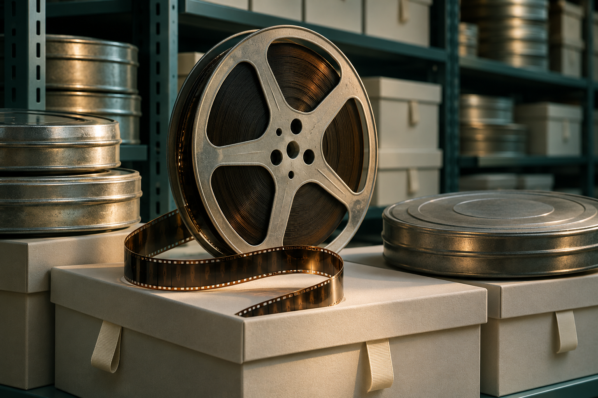
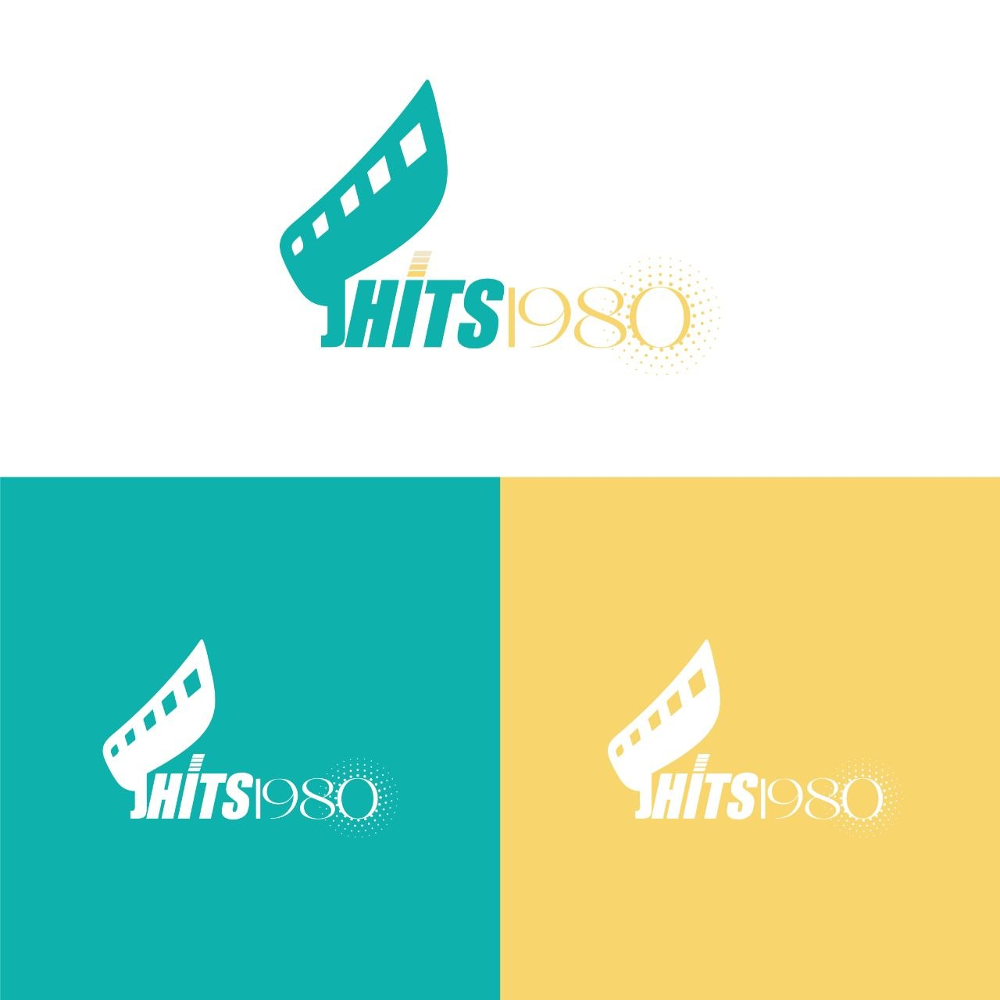
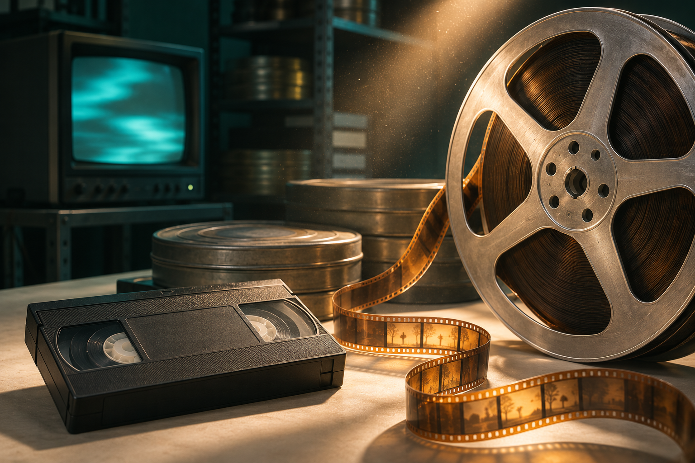
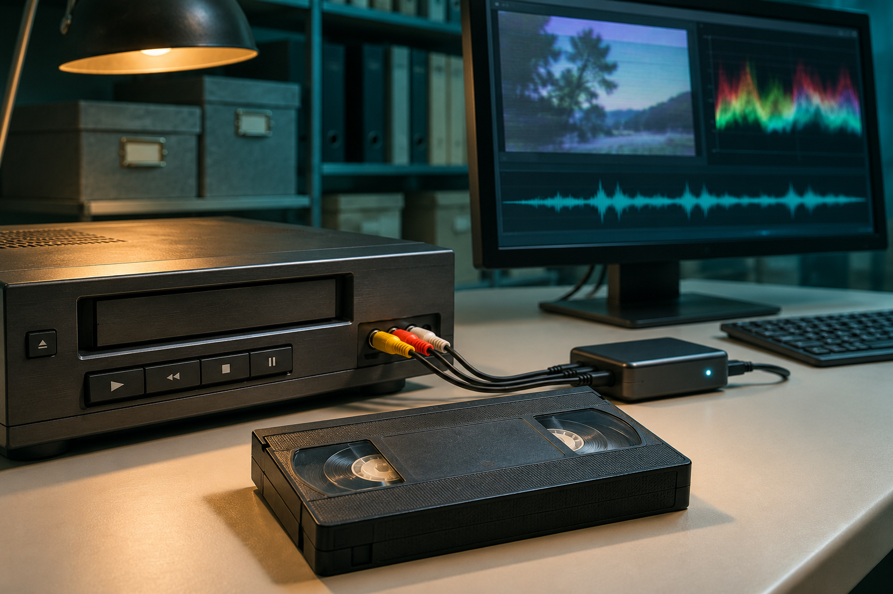
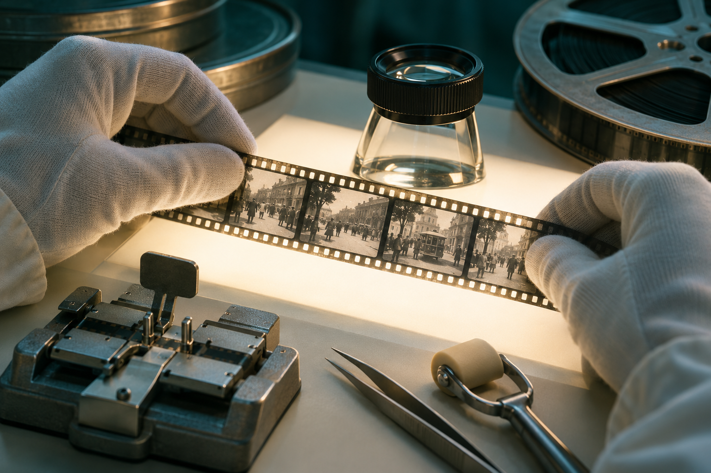

Preservación
Preservación de materiales audiovisuales para fines de archivo y conservación cultural.
MEMORIA A LARGO PLAZO
PRESERVACIÓN · DIGITALIZACIÓN · RESTAURACIÓN
Damos continuidad a las imágenes y los sonidos que cuentan nuestra historia. Del soporte original a su futuro digital.
Cuéntanos tu proyecto Explorar servicios ↓Ver JHITS en YouTube
JHITS / MEMORIA EN MOVIMIENTO01 / LO QUE HACEMOS
Materiales familiares, archivos culturales y memoria cinematográfica. Cada soporte es el punto de partida de una historia que merece continuar.

Preservación de materiales audiovisuales para fines de archivo y conservación cultural.
MEMORIA A LARGO PLAZO
Transferencia de cintas VHS, bobinas de película y grabaciones antiguas al entorno digital.
DEL SOPORTE AL ARCHIVO
Restauración audiovisual orientada a recuperar la lectura y el valor de imágenes y sonidos del pasado.
IMAGEN, SONIDO, HISTORIAEXPLORA / LA MIRADA CAMBIA
Desliza el control para explorar una interpretación visual del paso de una imagen degradada a una imagen más limpia.
Demostración ilustrativa con imagen generada y filtros. No representa una restauración real ni garantiza resultados.
02 / EMPEZAR ES SENCILLO
Cada material requiere una valoración propia. Empecemos por conocer lo que quieres conservar.
Escríbenos a jhits@jhits.es ↗Indica el tipo de soporte, la cantidad aproximada y el objetivo de tu proyecto.
Consulta las posibilidades de preservación, digitalización o restauración de tu material.
Acuerda con JHITS las condiciones y la forma de entrega antes de enviar originales.
03 / JHITS LLC
JHITS LLC trabaja en la preservación, digitalización y restauración de materiales audiovisuales para fines de archivo y conservación cultural.
Una identidad que conecta el lenguaje del cine con la continuidad del patrimonio audiovisual.
EL SIGUIENTE CAPÍTULO EMPIEZA AQUÍ
Háblanos de tus cintas, películas o grabaciones.
jhits@jhits.es